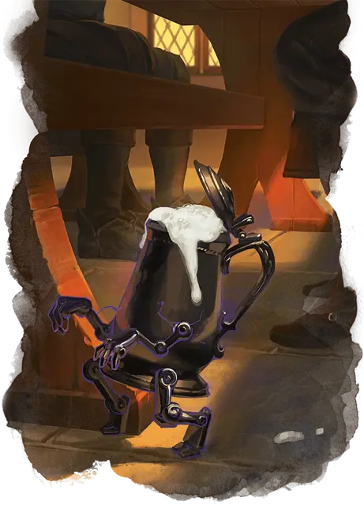

Крошечный слуга
Tiny Servant
3 уровень, Преобразование

Время сотворения 1 минута
Дистанция Касание
Компоненты В, С
Длительность 8 часов
Классы Волшебник, Изобретатель
Вы прикасаетесь к одному Крошечному немагическому объекту, который не прикреплен к другому объекту или поверхности и не переносится другим существом.
Цель оживает и отращивает маленькие ручки и ножки, превращаясь в существо, которое находится под вашим контролем, пока заклинание не закончится или пока хиты существа не упадут до 0. Его статистика приведена в блоке статистики ниже.
Бонусным действием вы можете мысленно давать существу команды, если оно находится в пределах 120 футов от вас (если вы управляете несколькими существами с помощью этого заклинания, вы можете одновременно командовать любым из них или сразу всеми, давая одну и ту же команду каждому из существ). Вы определяете, какое действие совершит существо и как оно будет двигаться в течение следующего хода, или вы можете дать простую общую команду, например, достать ключ, стоять и наблюдать или собрать несколько книг. Если вы не даёте никаких команд, слуга не делает ничего, кроме защиты себя от враждебных существ. После получения приказа слуга продолжает следовать ему, пока его задача не будет выполнена.
Когда хиты существа опускаются до 0, оно возвращается к своему изначальному облику, и весь излишний урон переносится на этот облик.
Бестиарий: Крошечный слуга
На больших уровнях. Если вы накладываете это заклинание, используя ячейку 4-го уровня или выше, вы можете оживить два дополнительных объекта за каждый уровень ячейки выше 3-го.